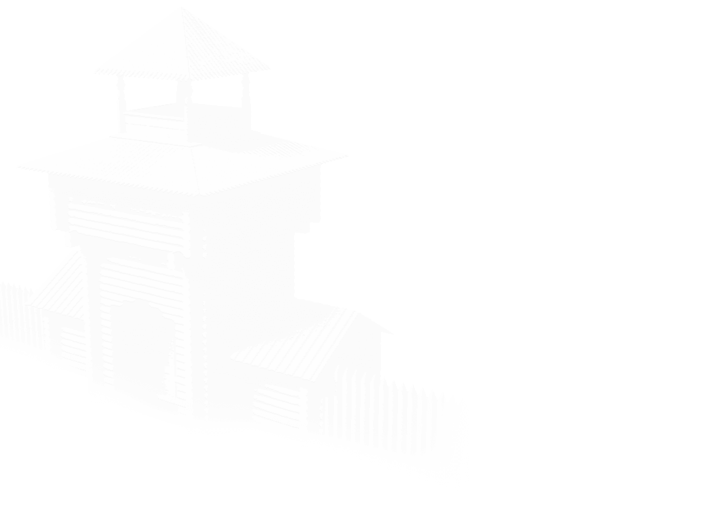
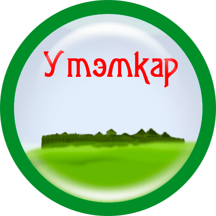

×
Городище Утэмкар (удм. «выигранное городище») - средневековое городище IX—XIII веков. Расположено к востоку от д. Нижняя (Большая) Богатырка (удм. Утэм), за глубоким и широким оврагом, по дну которого протекает ручей, к северу от дороги в г. Глазов, идущей вдоль Чепцы. Занимает мысовидный участок высокой коренной береговой террасы, ограниченной с запада обрывистым склоном к ручью, с юга - склоном к реке Чепца, с востока – понижением склона террасы. Территория четырехугольной формы, площадью около 7000 кв. м. Еще в конце 19 века сохраняла ясные следы искусственной подрезки склонов, подсыпания и выравнивания площадки. Предположительно с северной напольной стороны было также защищено рвом. Площадка давно распахивается. По данным исследователя удмуртского этноса Первухина Н.Г. крестьяне ранее находили бронзовые пряжки и подвески, железные и костяные наконечники стрел и копий, фрагменты керамики кости животных. Культурный слой полностью разрушен распашкой и смывом. На склонах встречаются фрагменты лепной керамики с примесью раковины. Скорее всего, расположенная вблизи Чепцы Нижняя Богатырка (Утэмкар) являлась дозорным пунктом наблюдения за Чепцой, основной транспортной артерией в здешних местах в стародавние времена. А плыли по реке и мирные купцы, и воинственные дружины булгар, татар, русских. М.Г. Атаманов, известный специалист в области ономастики и топонимики, в своей книге «История Удмуртии в географических названиях» пишет: Нижняя Богатырка одно из старейших поселений на севере республики. Ей около 400 лет. То есть по возрасту она даже старше, чем «деревня Глазовская» - город Глазов. А называли её раньше Утэм – «выигранный», «подаренный», в переводе с удмуртского. О подарке рассказывает красивая легенда. ...Жили в этих краях могучие богатыри Донды и Идна со своими дружинами. Скучно им стало, враги не беспокоили. Но дружина всегда должна быть готова к бою, оттачивать свое военное искусство. Вот и решили соседи-богатыри посоревноваться, определить лучшего стрелка. Турнир назначили возле нынешней Богатырки. Это место принадлежало Идне. «Кто лучше стреляет, тому и будут принадлежать здешние поля и леса!» - поставил на «кон» богатый прииск Идна. О том, что выставил со своей стороны Донды, - легенда умалчивает. Натянули могучие луки богатыри из его дружины, и стрелы воткнулись в деревья, стоявшие на краю дальнего леса. Прицелились в том же направлении воины Идны, но их стрелы упали на поле заметно ближе, чем у соперников. «Бери себе!» - сказал честный Идна доблестному Донды, показав на окружающие угодья. Вот так и появилось «подаренное место» – поле соревнования богатырей. Хотя как богатыри превратились в «богатырок» - никто из ученых не объясняет. Но как только не шутит история! Так или иначе было в действительности, теперь определить трудно. Разумеется, в легендах налицо поэтическое преувеличение. Но эти люди были богатырями в лицах своих соплеменников обладали большой физической силой, храбростью. И, кроме того, считались волшебниками-кудесниками: у них имелись золотые лыжи, на которых богатыри за день пробегали туда обратно километров по шестьдесят: от одного города до другого и обратно. Из книги: В краю Донды-батыра: достопримечательности Глазовского района: сборник краеведческих материалов / [сост. З. П. Перминова; Муниципальное учреждение культуры "Глазовская централизованная библиотечная система" муниципального образования "Глазовский район"]. - Глазов: ООО "Центр-сервис", 2014. - 68 с.: фото.
×
Однажды поспорили дондинские батыры с иднакарскими, что у них и силы больше, и луки лучше, и стреляют они дальше. А в то время иднакарским батырам принадлежал земельный участок по течению Чепцы, рядом с землей дондинцев. И побились батыры за эту землю так: если иднакарские батыры выстрелят из своих луков дальше, то дондинские уступают им свой город, а если нет, то иднакарские навеки уступают им свой земельный участок. В день и час, назначенный для сражения, батыры, каждый со своей горы, послали стрелы в сторону противника. Стрелы иднакарцев долетели только до середины владения дондинцев и воткнулись в землю с такой силой, что образовали большой пригорок. Дондинцы выстрелили удачнее, их стрелы попали в сосны, что росли у самых стен Иднакара середины владения дондинцев и воткнулись в землю с такой силой, что образовали большой пригорок. Дондинцы выстрелили удачнее, их стрелы попали в сосны, что росли у самых стен Иднакара. Так они выиграли заклад. Земли, полученные от иднакарцев, с той поры стали называть Утэм, то есть «выигрыш». И здесь основали новый кар - Утэмкар.
Земли, полученные от иднакарцев, стали называть Утэм, то есть «выигрыш». И здесь основали новый кар - Утэмкар.